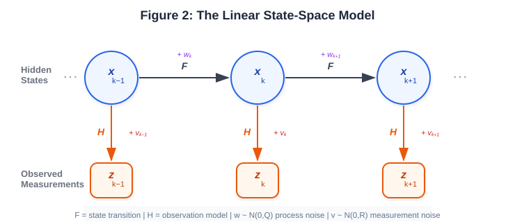
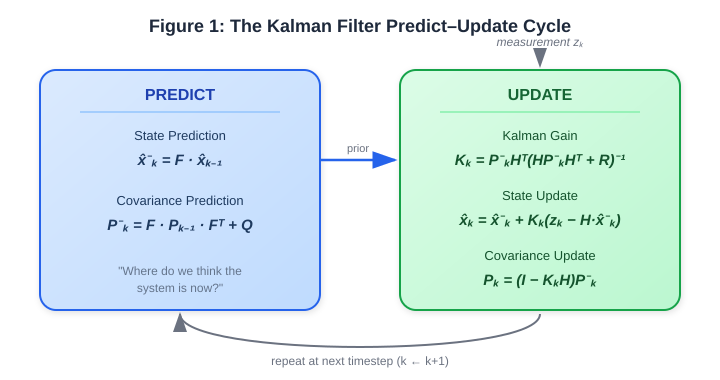
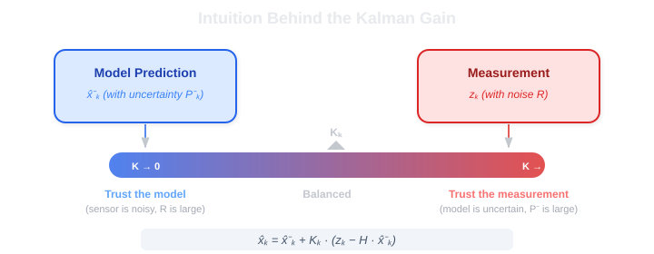
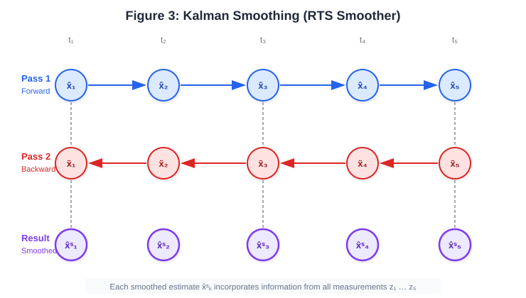
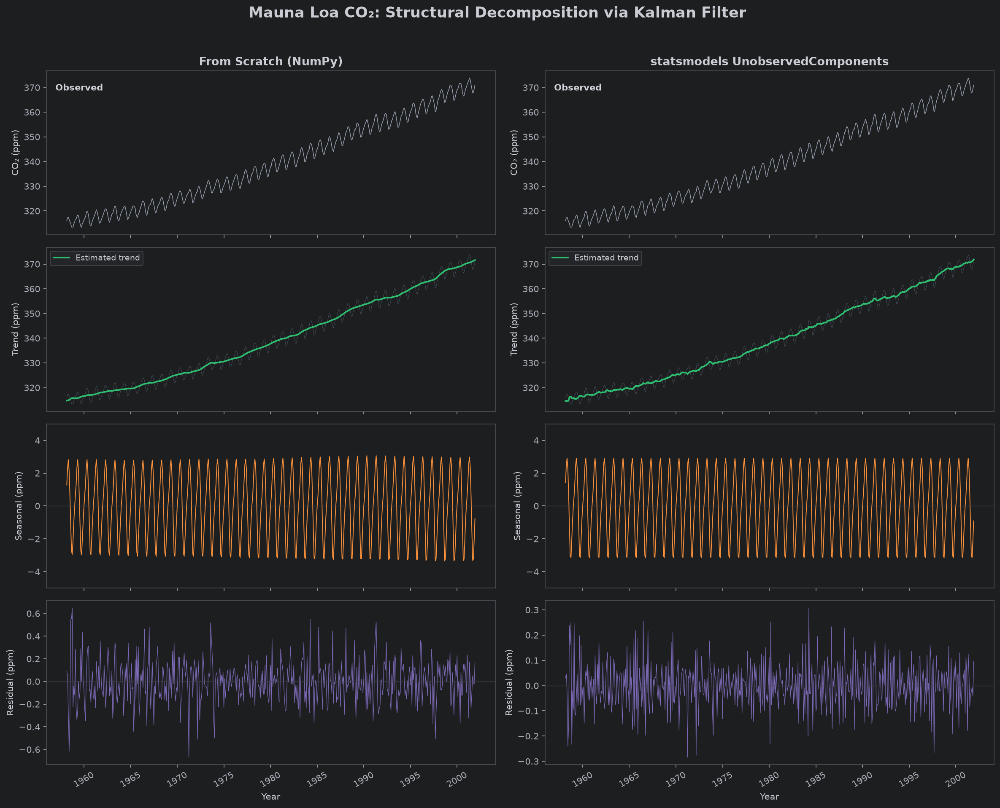
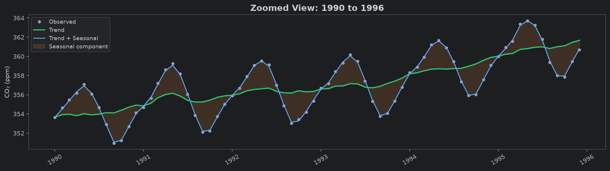
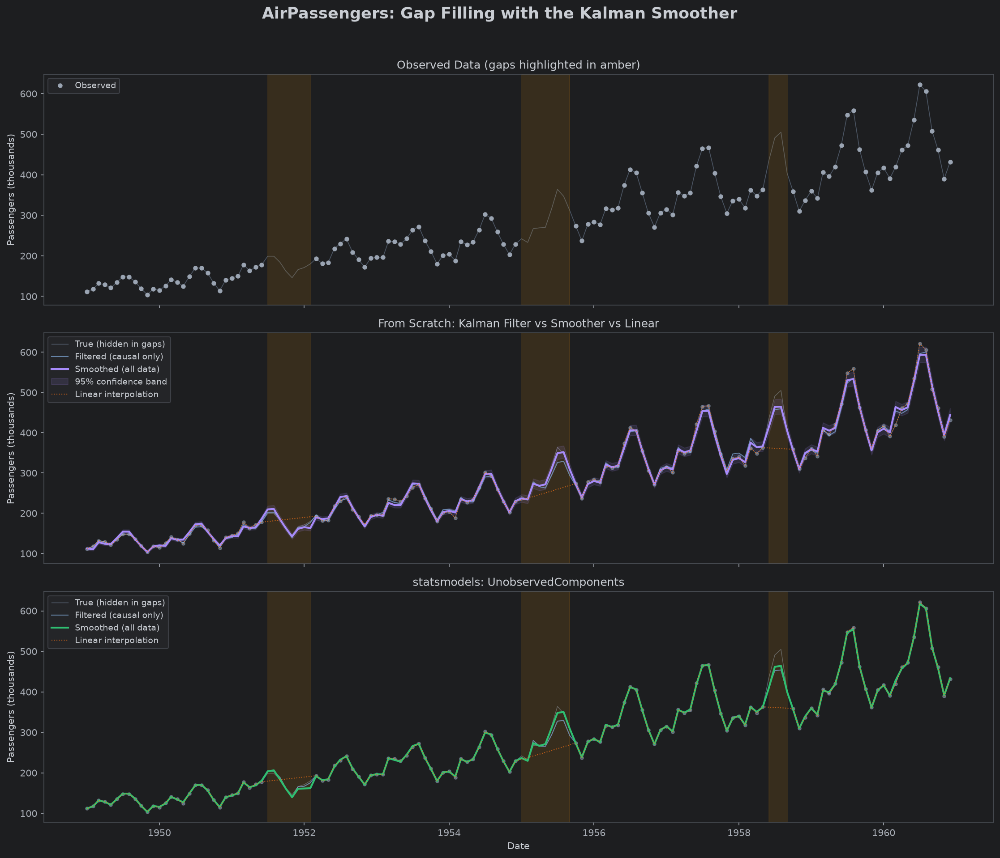
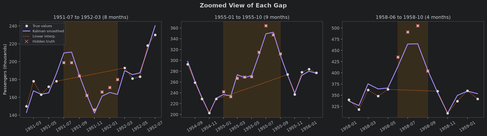

Kalman Filters and Smoothing for Time-Series Data
An important part of my current work involves time-series data. Over the past couple of months, I have come to appreciate the importance of preprocessing, especially because time-series data is often noisy, incomplete, irregularly sampled, and contains gaps. Your time‑series prediction model is only as good as your understanding and the preprocessing you apply to the data. There is one approach that really helps with denoising, filling gaps, separating trends and is a sort of a Swiss Army Knife for time-series data: the Kalman filter.
The Kalman filter is a recursive algorithm that estimates the hidden state of a dynamic system from a sequence of noisy measurements. It was published by Rudolf Kalman back in 1960 and famously flew on the Apollo missions but the reason I care about it today is more mundane. It is provably optimal for linear-Gaussian systems, it runs cheaply in real time and gives you uncertainty estimates for free alongside every state estimate. When you combine it with its smoothing extension, it handles denoising, decomposition, forecasting and interpolation all from one framework.
If you have ever used statsmodels you were running a Kalman filter under the hood.
This post builds the filter and the smoother from first principles and then applies them to two classic datasets: decomposing the Mauna Loa \(\text{CO}_2\) series into trend and seasonality and reconstructing artificially deleted chunks of the AirPassengers series.
You can find the full code for both examples in my handbook repo.
The State-Space Model
The filter operates on a state-space model which writes down both the dynamics and the observation process in matrix form. For a discrete-time linear system:
State equation (how the hidden state evolves):
\[ x_k = F \, x_{k-1} + w_k \]
Observation equation (how measurements relate to the state):
\[ z_k = H \, x_k + v_k \]
where:
- \(x_k\) is the state vector at time step \(k\), the thing we want to estimate
- \(F\) is the state transition matrix encoding the system dynamics
- \(H\) is the observation matrix mapping state to measurement space
- \(w_k \sim \mathcal{N}(0, Q)\) is the process noise, random disturbances to the dynamics
- \(v_k \sim \mathcal{N}(0, R)\) is the measurement noise, sensor imprecision
The key assumption is that both noise sources are Gaussian and independent of each other.

What makes this formulation so useful for time-series work is its generality. The state vector can contain anything: a level, a slope, eleven seasonal factors, a bias term. The matrices \(F\) and \(H\) define how those pieces relate to each other and to what you actually observe.
Many classical time-series methods (ARIMA, exponential smoothing, structural models) turn out to be special cases of this one linear state-space form.
The Kalman Filter: Predict, then Update
The filter processes measurements one at a time, maintaining a running estimate of the state and of its own uncertainty. Each timestep has two steps: predict and update.

Predict step
Before the new measurement arrives, project the state forward using the dynamics:
\[ \hat{x}^-_k = F \, \hat{x}_{k-1} \]
\[ P^-_k = F \, P_{k-1} F^\top + Q \]
The superscript \(-\) marks a “prior” estimate before seeing the measurement. Notice that the covariance \(P^-_k\) grows because of the added process noise \(Q\). This is the model admitting that the further it extrapolates without data, the less sure it is. That one property ends up doing a lot of work later when we get to missing data.
Update step
When the measurement \(z_k\) arrives, correct the prediction:
\[ \tilde{y}_k = z_k - H \, \hat{x}^-_k \qquad \text{(innovation)} \]
\[ S_k = H \, P^-_k H^\top + R \qquad \text{(innovation covariance)} \]
\[ K_k = P^-_k H^\top S_k^{-1} \qquad \text{(Kalman gain)} \]
\[ \hat{x}_k = \hat{x}^-_k + K_k \, \tilde{y}_k \]
\[ P_k = (I - K_k H) \, P^-_k \]
The innovation \(\tilde{y}_k\) is the surprise: the difference between what we measured and what we expected to measure. The Kalman gain \(K_k\) decides how much of that surprise to fold back into the estimate.
The Kalman gain is a trust dial
The gain is the heart of the algorithm and worth staring at for a minute.

When the measurement noise \(R\) is large (an unreliable sensor), \(K_k\) shrinks toward zero and the filter mostly trusts its own prediction. When the prior uncertainty \(P^-_k\) is large (an uncertain model), \(K_k\) grows toward one and the filter mostly trusts the measurement. In between it blends the two optimally: for a linear-Gaussian system, no other linear combination of prediction and measurement achieves lower mean squared error.
It is a trust dial that re-tunes itself at every timestep based on who currently deserves more trust, the model or the sensor.
One practical note on initialization. The filter needs a starting \(\hat{x}_0\) and \(P_0\). For time-series work the standard trick is a diffuse initialization i.e. a huge \(P_0\) which effectively tells the filter “I know nothing, learn the state from the data”. It converges to sensible estimates within a few timesteps either way, as long as every state component actually influences the observations through \(H\) (a component that does not is unobservable and no amount of filtering will recover it).
Kalman Smoothing: Using the Future Too
The filter as described is causal: the estimate at time \(k\) uses only measurements up to \(k\). That is what you want in real time. But for offline analysis of a time series you already have the whole dataset sitting in front of you so why should the estimate at 1995 ignore everything you know about 1996?
Kalman smoothing fixes this by producing estimates that use all measurements including both past and future. The standard form is the Rauch-Tung-Striebel (RTS) smoother which works in two passes.

Forward pass: run the ordinary Kalman filter through the whole dataset, storing the filtered estimates \(\hat{x}_k, P_k\) and the priors \(\hat{x}^-_k, P^-_k\) at every step.
Backward pass: starting from the final filtered estimate, walk backward. At each step \(k\) (from \(N-1\) down to \(1\)):
\[ G_k = P_k F^\top (P^-_{k+1})^{-1} \]
\[ \hat{x}^s_k = \hat{x}_k + G_k \left( \hat{x}^s_{k+1} - \hat{x}^-_{k+1} \right) \]
\[ P^s_k = P_k + G_k \left( P^s_{k+1} - P^-_{k+1} \right) G_k^\top \]
The smoothed estimates are always at least as good as the filtered ones since they use strictly more information. The improvement is most dramatic in two places: at the start of the series where the filter is still shaking off its initial conditions and the smoother can reach back from later data to correct it,and inside gaps in the data, where the smoother blends forward extrapolation from the past with backward extrapolation from the future.
What can we do with the Kalman filter and smoother?
Denoising. If your series is a noisy version of some smooth underlying process, model the state as the true value plus its rate of change and let the filter separate signal from noise. Unlike a moving average or a generic low-pass filter, the Kalman approach adapts automatically: it smooths harder where the signal-to-noise ratio is low and lighter where it is high, and tells you how reliable each denoised value is.
Structural decomposition. Model the series as trend + seasonal + residual, give each component its own block in the state vector with its own dynamics, and the filter estimates all of them simultaneously, with uncertainty.

The noise variances control how flexible each component is: a large process noise on the trend lets it move fast, a tiny one forces it to evolve slowly and smoothly. This is exactly what statsmodels.tsa.UnobservedComponents do internally.
Forecasting. Once the filter has consumed all the data, forecasting is just running the predict step repeatedly with no more updates. The predicted state at horizon \(h\) is the point forecast; the predicted covariance gives you honest uncertainty bands that widen with horizon, since every extra predict step adds process noise with no measurement to correct it.
This predict-only forecast is persistence done properly: it carries the whole state forward (level, slope and seasonal shape, not just the last value).
Interpolation and missing data. This is where the smoother genuinely shines and the mechanism is quite simple: at timesteps with no measurement skip the update step. The predict step still runs, carrying the state through the gap while the uncertainty grows. On the backward pass, information from after the gap flows back through it.

The result is an interpolated estimate at every missing point with confidence bands that widen toward the middle of the gap and narrow near its edges. Linear or spline interpolation gives you neither the dynamics-awareness nor the uncertainty. Irregular sampling works by the same principle: the predict step can project over any time interval, you just adjust \(F\) and \(Q\) for the actual elapsed time.
Example 1: Decomposing the Mauna Loa \(\text{CO}_2\) Series
Dataset: The Keeling Curve records atmospheric \(\text{CO}_2\) (in ppm) measured at the Mauna Loa Observatory in Hawaii since 1958, and it ships with statsmodels (sm.datasets.co2). Resampled to monthly, it gives 526 points from March 1958 to December 2001 ranging from about 313 to 374 ppm. Two components are visually obvious: a long-term upward trend from fossil fuel emissions and an annual cycle of roughly \(\pm 3\) ppm driven by Northern Hemisphere vegetation (plants absorb \(\text{CO}_2\) in spring and summer, release it in autumn and winter). The goal is to separate them cleanly.
The model. A structural model with a local linear trend and a 12-month seasonal component. The state vector is with dynamics:
\[ x = [\, \text{level}, \; \text{slope}, \; s_1, s_2, \ldots, s_{11} \,] \quad \text{(dimension 13)} \]
the level follows a random walk with drift (\(\text{level}_k = \text{level}_{k-1} + \text{slope}_{k-1} + \eta\)), the slope itself drifts slowly and the seasonal factors obey a sum-to-zero constraint over each 12-month cycle, implemented as a shift register. The observation is simply level plus the current seasonal factor plus noise.
The transition matrix encodes all of this:
period = 12
state_dim = 2 + (period - 1) # 13
F = np.zeros((state_dim, state_dim))
F[0, 0] = 1.0 # level persists
F[0, 1] = 1.0 # slope feeds into level
F[1, 1] = 1.0 # slope persists
for j in range(period - 1):
F[2, 2 + j] = -1.0 # seasonal sum-to-zero
for j in range(1, period - 1):
F[2 + j, 2 + j - 1] = 1.0 # shift register
H = np.zeros((1, state_dim))
H[0, 0] = 1.0 # observe the level
H[0, 2] = 1.0 # plus the current seasonal factorThe statsmodels equivalent is a single call, which also learns the noise variances by maximum likelihood:
model = UnobservedComponents(
co2_monthly,
level="local linear trend",
seasonal=12,
stochastic_seasonal=True,
)
results = model.fit(disp=False)Results: The full decomposition from-scratch on the left and statsmodels on the right:

The trend captures the accelerating rise: not a straight line but a curve that gently steepens as emission rates increase. The seasonal component is a clean, nearly constant annual oscillation dropping about 6 ppm from the May peak to the September trough each year as Northern Hemisphere forests absorb carbon through the growing season. The residual is tiny (about 0.09 ppm standard deviation in the statsmodels version) confirming that trend plus seasonal explains nearly everything. The two implementations agree closely, the visible difference is just MLE-optimized variances versus my hand-tuned ones which changes the trend smoothness slightly.
Zooming into 1990 to 1996 shows the components at the individual-cycle level:

The green line is the trend alone, the blue line adds the estimated seasonal component and the observed points cluster tightly around the reconstruction.
The below MLE variances are as informative as the plots:
| Parameter | Estimate | Interpretation |
|---|---|---|
| \(\sigma^2_\text{irregular}\) | 0.023 | Observation noise is small (good measurements) |
| \(\sigma^2_\text{level}\) | 0.056 | The level moves meaningfully month to month |
| \(\sigma^2_\text{trend}\) | \(3.4 \times 10^{-6}\) | The growth rate changes very slowly |
| \(\sigma^2_\text{seasonal}\) | \(\approx 0\) | The seasonal shape is essentially fixed over 43 years |
The near-zero seasonal variance is the model telling us the annual \(\text{CO}_2\) cycle has barely changed shape across four decades. This kind of interpretability is quite useful.
Example 2: Filling Gaps in the AirPassengers Series
Dataset: The Box-Jenkins AirPassengers series: monthly international airline passenger totals (in thousands) from January 1949 to December 1960, 144 observations. This data is freely available as a CSV via the Rdatasets repository. Strong upward trend, strong seasonality and crucially the seasonal amplitude grows with the level: the summer peaks of the late 1950s are far taller in absolute terms than those of 1949. That is multiplicative seasonality which a linear filter cannot represent directly. The standard fix is to work in log-space where multiplicative structure becomes additive then exponentiate the estimates back at the end.
Simulating sensor failure. To test interpolation, I deleted three chunks of the data and kept the removed values as ground truth:
| Gap | Duration | What it spans |
|---|---|---|
| Jul 1951 to Mar 1952 | 8 months | Most of a seasonal cycle |
| Jan 1955 to Oct 1955 | 9 months | Nearly a full cycle |
| Jun 1958 to Oct 1958 | 4 months | The summer peak only |
The key mechanism. Handling missing data really is just skipping the update:
for k in range(n):
# Predict (always runs)
x_prior = F @ x_hat
P_prior = F @ P @ F.T + Q
if is_observed[k]:
# Update: incorporate the measurement
innovation = y[k] - (H @ x_prior).item()
S = H @ P_prior @ H.T + R
K = P_prior @ H.T @ np.linalg.inv(S)
x_hat = x_prior + (K * innovation).flatten()
P = (np.eye(state_dim) - K @ H) @ P_prior
else:
# Missing: prior becomes posterior, uncertainty grows
x_hat = x_prior
P = P_priorDuring a gap, \(P\) grows at every step because nothing arrives to shrink it which is exactly what produces the widening confidence bands. The backward smoother pass then pulls information from the observations after the gap back through it, tightening the estimate from both sides.
Results: The full series with the from-scratch and statsmodels versions against plain linear interpolation:

The smoothed lines continue the seasonal oscillation straight through the gaps while linear interpolation just draws a line between the gap edges and ignores the seasonality entirely. Also worth noticing is the causal filtered estimate (light blue): it drifts during the gaps because it has no measurements to correct against and only snaps back once data resumes. The smoothed estimate stays close to the truth throughout, because it also sees the data on the far side.
Zooming into each gap with the hidden true values marked:

The 9-month gap in the middle panel catches your eye as we are able to reconstruct nearly a full seasonal cycle purely from the learned dynamics and the data on either side.
If we look at the RMSE against the held-out true values (in thousands of passengers):
| Gap | Kalman smoother | Linear interpolation | Improvement |
|---|---|---|---|
| 8 months (Jul 1951 to Mar 1952) | 8.7 | 21.7 | \(2.5\times\) |
| 9 months (Jan 1955 to Oct 1955) | 6.3 | 52.5 | \(8.3\times\) |
| 4 months (Jun 1958 to Oct 1958) | 26.3 | 106.0 | \(4.0\times\) |
The smoother’s advantage grows with gap size and is largest wherever the seasonal pattern deviates most from a straight line. This is because the state-space model knows about the 12-month periodicity. The seasonal states carry a memory of the seasonal shape and the dynamics propagate it forward, and backward, through the gap. Linear interpolation knows nothing.
Beyond Linear and Gaussian
Everything above assumes linear dynamics and Gaussian noise. When your problem breaks those assumptions (multiplicative effects you cannot log away, regime switching, stochastic volatility) there is a well-trodden ladder of extensions: the Extended Kalman Filter linearizes around the current estimate with Jacobians, the Unscented Kalman Filter propagates a small set of sigma points through the nonlinearity instead, and particle filters represent the state distribution with weighted samples and handle essentially anything, at much higher compute cost.
I have not explored these extensions myself. For actual predictions we anyway rely on ML-based forecasting models.
Wrapping Up
Most of the value I get from the Kalman filter has nothing to do with using it as the final forecasting model. It is a pre-processing workhorse: it denoises, decomposes a series into interpretable trend and seasonal components and fills gaps with dynamics-aware estimates and honest uncertainty bands instead of straight lines. Your forecasting model, ML-based or otherwise is only as good as the data you feed it and this is the tool that gets the data into shape.
The second takeaway is persistence. The predict-only Kalman forecast carries the whole state forward (level, slope and seasonal shape, not just the last value) which makes it a natural baseline for any forecasting work: it is cheap, causal and surprisingly hard to beat as the gap-filling in Example 2 showed against linear interpolation. If an ML model cannot beat this baseline, it is not learning much.
References and Further Reading
- Kalman, R. E. (1960). “A New Approach to Linear Filtering and Prediction Problems.” Journal of Basic Engineering, 82(1), 35-45.
- Rauch, H. E., Tung, F., and Striebel, C. T. (1965). “Maximum Likelihood Estimates of Linear Dynamic Systems.” AIAA Journal, 3(8), 1445-1450.
- Harvey, A. C. (1989). Forecasting, Structural Time Series Models and the Kalman Filter. Cambridge University Press.
- Durbin, J. and Koopman, S. J. (2012). Time Series Analysis by State Space Methods. 2nd ed., Oxford University Press.
- Commandeur, J. J. F. and Koopman, S. J. (2007). An Introduction to State Space Time Series Analysis. Oxford University Press.
statsmodelsstate-space documentation, the library used throughout the examples.